Motivated and detail-oriented Civil Engineering graduate with hands-on experience in AutoCAD drafting and Revit modelling. Skilled in developing accurate 2D drawings, 3D BIM models, and construction detailing.
I am a Civil Engineering graduate with practical experience in construction activities, drafting, and BIM modelling. My goal is to start my professional journey as a BIM Trainee Modeller where I can apply my knowledge of Revit Architecture, AutoCAD 2D/3D, and construction drawings while continuously improving my BIM skills.
2021 - 2025 | CGPA: 7.1 | Percentage: 70%
Percentage: 55.7%
Percentage: 61.60%
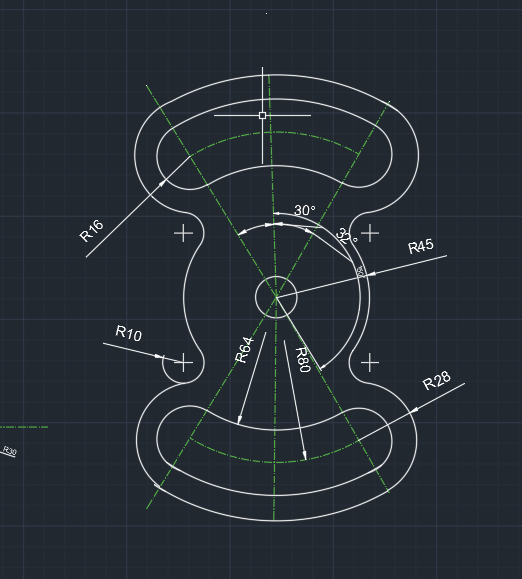
Created detailed 2D technical drawings with accurate dimensions, geometrical shapes, and drafting standards.
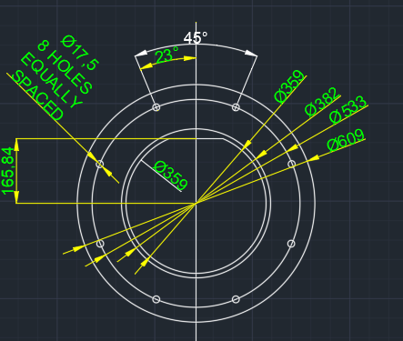
Developed precise mechanical component drawings using AutoCAD with dimensioning and detailing.
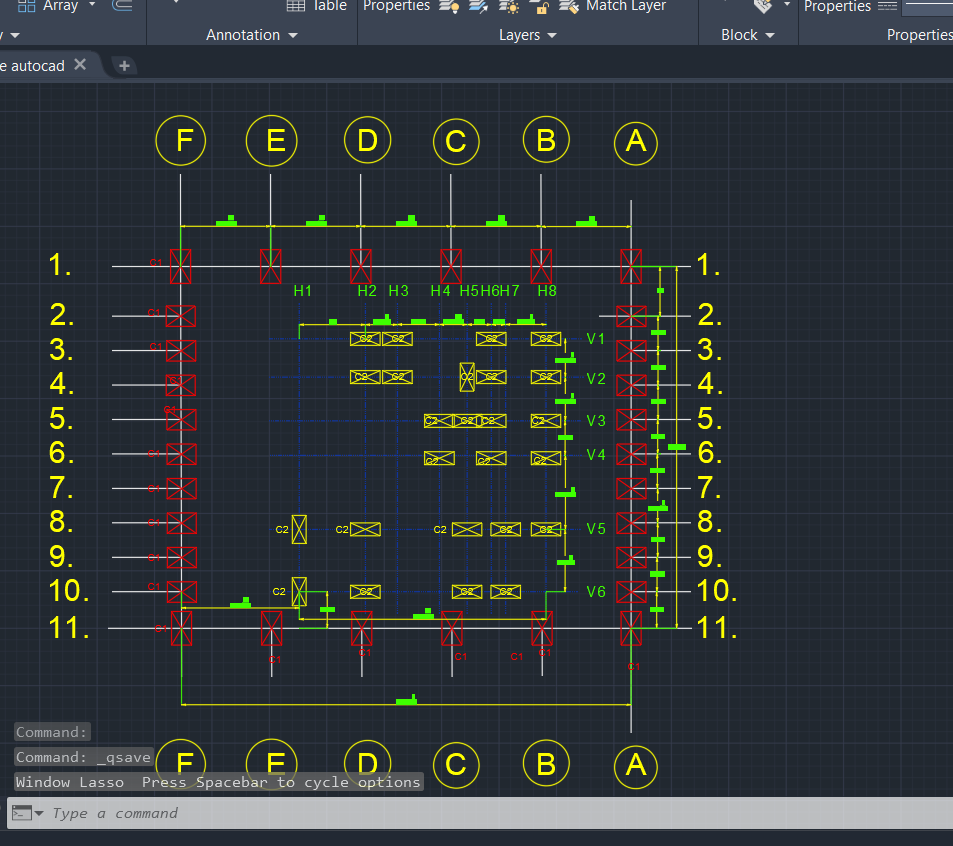
Prepared accurate 2D drafting layouts following engineering drawing principles and standards.
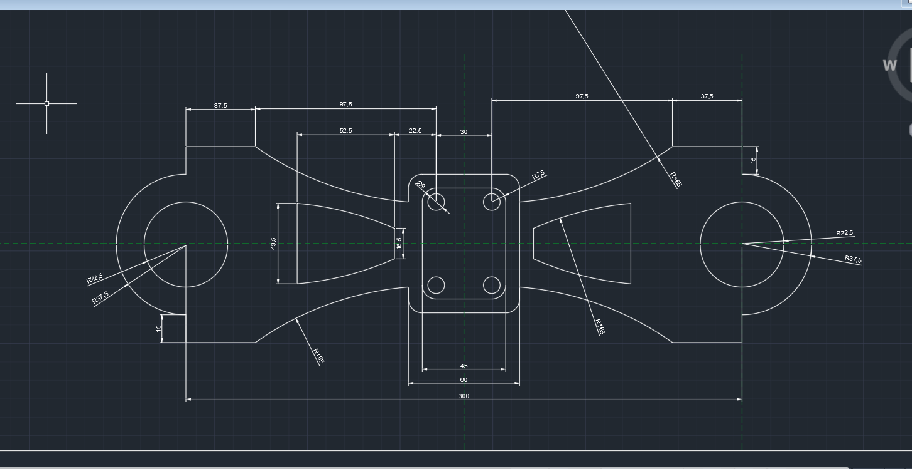
Created symmetrical and detailed component drawings with proper annotations and dimensions.
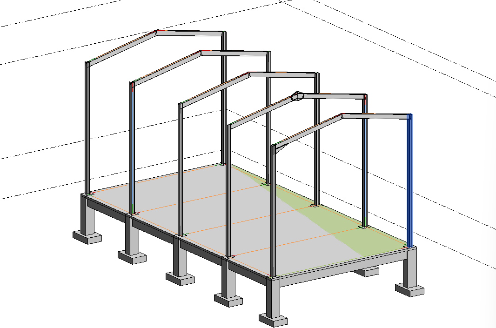
Developed 3D structural BIM models including columns, beams, and framing elements using Revit.
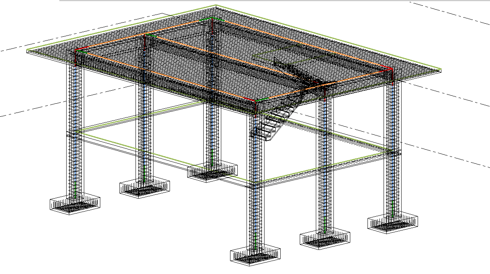
Created a complete structural BIM model with columns, beams, slabs, and stair components.
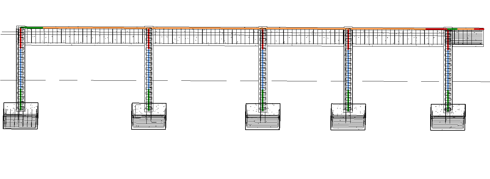
Designed a detailed residential floor plan in AutoCAD, including room layouts, door and window placements, and dimensional planning.
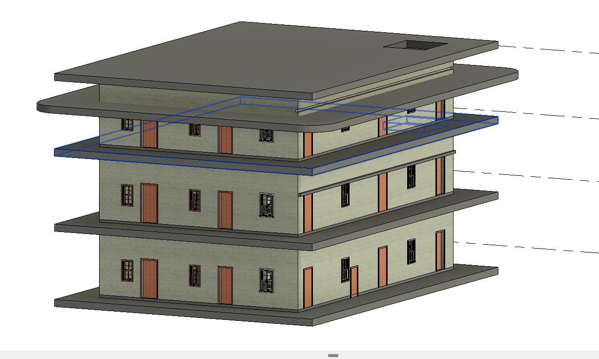
Created architectural elevations and sectional views to visualize building appearance, structural elements, and vertical spatial relationships.
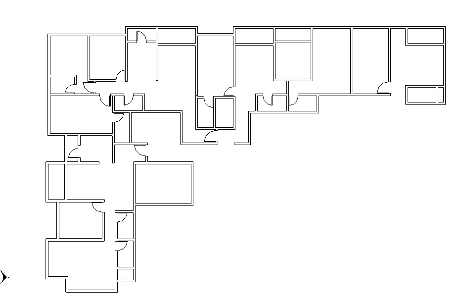
Developed staircase drawings with accurate riser, tread, landing, and level specifications for construction documentation.
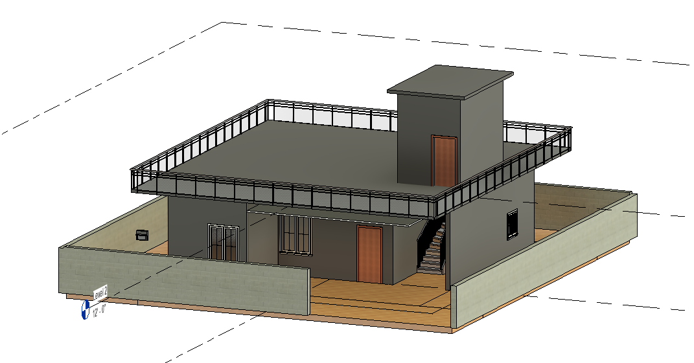
Built a 3D architectural model showcasing terrace layout, external staircase, parapet walls, and realistic building visualization.
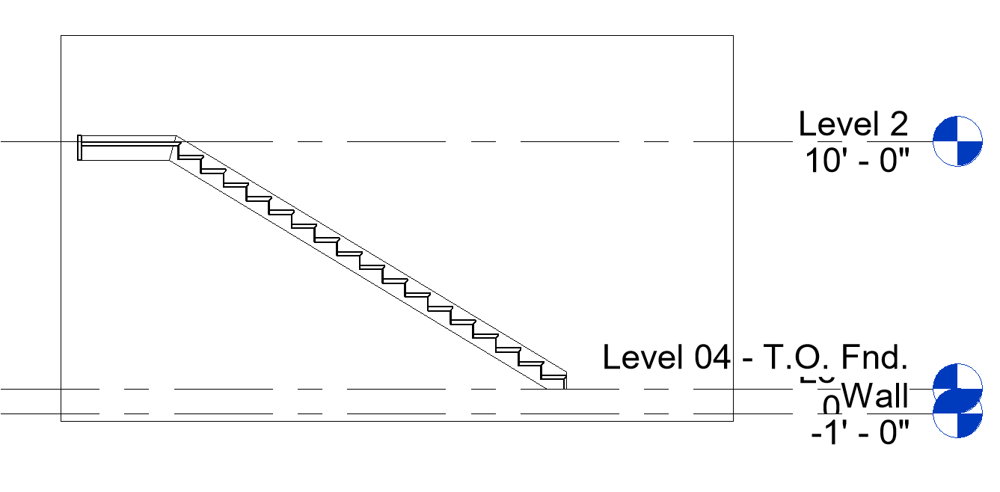
Designed a comprehensive building layout featuring multiple rooms and circulation spaces with efficient space planning techniques.
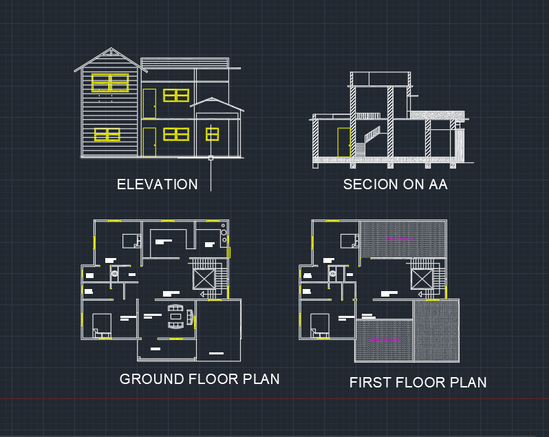
Created a 3D multi-storey building model with floor slabs, balconies, roof structures, and architectural detailing using BIM tools.
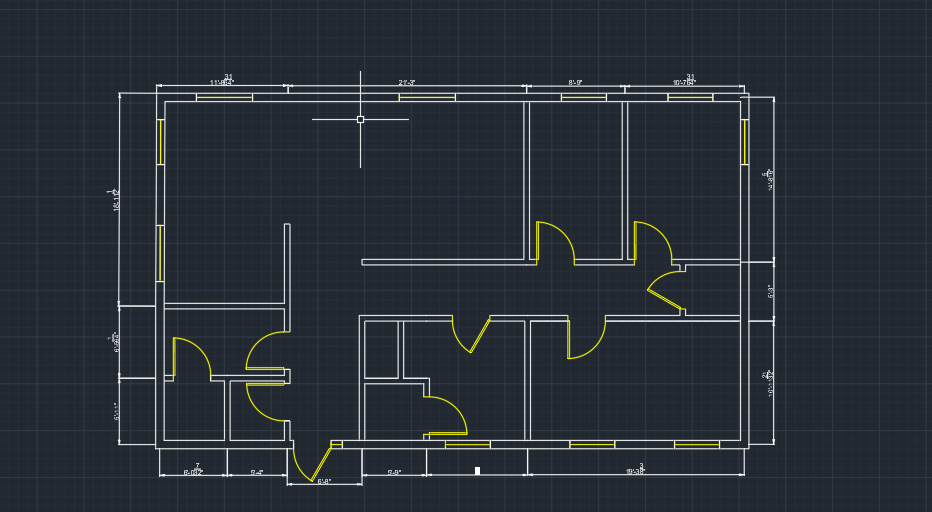
Prepared reinforced concrete column and footing reinforcement drawings with bar detailing, anchorage, and foundation specifications.
Worked on recycling damaged POP idols and medical plaster to develop sustainable construction materials. The project focused on reducing waste and improving material reuse for eco-friendly building applications.